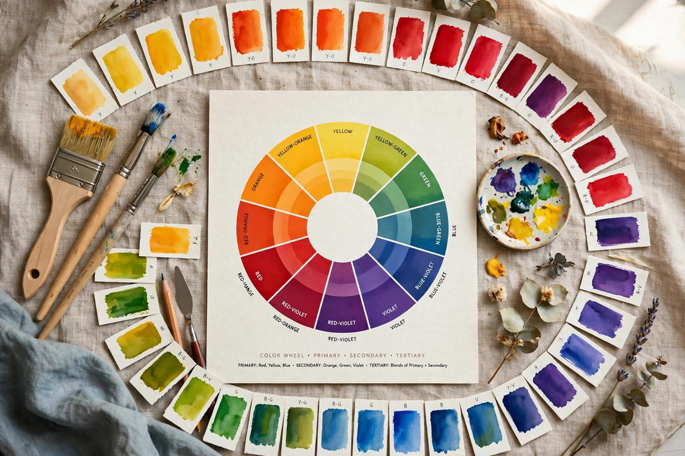

Color Psychology in Design

What colors make people feel, and how much of it is real? A grounded guide to using color psychology in branding and design.
What color psychology actually claims
Color psychology is the idea that colors trigger emotional responses: red feels urgent, blue feels trustworthy, green feels natural, yellow feels cheerful. These associations appear in many studies and in everyday language, from feeling blue to seeing red. They are useful as a starting point, but they are tendencies, not laws. The same red that signals a sale in one shop signals danger on a road sign, and context always shapes the reaction.
Culture changes the meaning
Color meanings vary widely by culture. White means purity and weddings in many Western countries, but mourning in parts of Asia. Red means luck and celebration in China and warning in much of Europe. If your audience is international, check the associations of your main colors in the cultures you serve. A palette that feels friendly at home can send the wrong message abroad, so research beats assumption.
Warm and cool feelings
Warm colors such as red, orange and yellow advance toward the viewer and feel energetic, social and appetizing, which is why food brands use them so often. Cool colors such as blue, green and purple recede, feel calm and spacious, and suit finance, health and technology. A mostly cool design with one warm accent can feel both trustworthy and lively, while an all-warm design can feel loud if it has no cool balance.
Using psychology without clichés
The risk of color psychology is lazy cliché: every bank in blue, every eco brand in green. Instead, use the feeling as a brief and then find a fresh shade. A fintech brand does not need the same corporate blue as its rivals; a deep teal or a dark slate with a bright accent can feel trustworthy and distinct. Test your palette with real users and ask what words come to mind; their answers matter more than any list in a textbook.
Color is only part of the message
Words, images, layout and typography carry as much emotion as color. A friendly blue cannot rescue hostile copy, and a scary red cannot ruin a genuinely helpful page. Treat color as the tone of voice of your design: it should match what you are saying, not replace it. When color, words and imagery agree, the message feels coherent and people trust it more.
Testing emotional responses
Do not trust a textbook list of color meanings; test them with your own audience. Show ten people your palette and ask them to pick three words from a list, such as calm, exciting, trustworthy or cheap. If most people pick the words you intended, the palette is working. If they pick the opposite, change it, however much you like the colors. This kind of quick test takes an hour and can save a brand from launching with a palette that sends the wrong message to the very people it needs to convince.
Frequently asked questions
Is color psychology scientifically proven?
Partially. Some associations are consistent across studies, but effects are modest and depend heavily on context and culture. Treat it as guidance, not fact.
Which color converts best for buttons?
There is no universal best color. What matters is that the button stands out from its surroundings and looks clickable. Test with your own audience.
Can color affect appetite?
Warm colors like red and orange are commonly used by food brands because they feel stimulating, but the effect is small compared to the food itself and the offer.
Can a color mean different things to different people?
Yes. Age, culture and personal experience all shape color associations, so test your palette with people who resemble your real audience.
Try the tools
HEX to RGB Converter
Convert a HEX color code into its red, green and blue values, instantly and in your browser.
RGB to HEX Converter
Convert red, green and blue values (0-255) into a HEX color code you can use in CSS.
Palette Generator
Pick a base color and generate complementary, analogous, triadic and monochromatic palettes.
Contrast Checker
Check the WCAG contrast ratio between a text color and a background color, with AA and AAA verdicts.
More guides
 How to Pick Colors for a Website
How to Pick Colors for a Website HEX vs RGB vs HSL Explained
HEX vs RGB vs HSL Explained Building a Color Palette from Scratch
Building a Color Palette from Scratch Color Contrast and Accessibility Guide
Color Contrast and Accessibility Guide Choosing Brand Colors
Choosing Brand Colors Warm vs Cool Colors
Warm vs Cool Colors
Color Harmony Rules for Beginners Using a Color Picker Tool Effectively
Using a Color Picker Tool Effectively Monochromatic Color Schemes
Monochromatic Color Schemes Complementary Colors: A Complete Guide
Complementary Colors: A Complete Guide Analogous Colors in Design
Analogous Colors in Design Triadic Color Schemes Explained
Triadic Color Schemes Explained Color Trends for 2026
Color Trends for 2026 Picking Colors for Dark Mode
Picking Colors for Dark Mode Color-Blind Friendly Design
Color-Blind Friendly Design Gradient Colors: A Practical Guide
Gradient Colors: A Practical Guide Seasonal Color Palettes
Seasonal Color Palettes Color Mistakes Beginners Make
Color Mistakes Beginners Make Naming Colors in CSS
Naming Colors in CSS